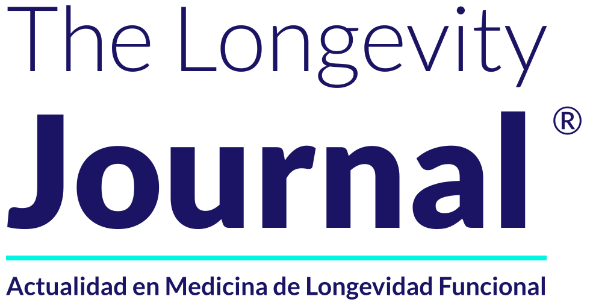
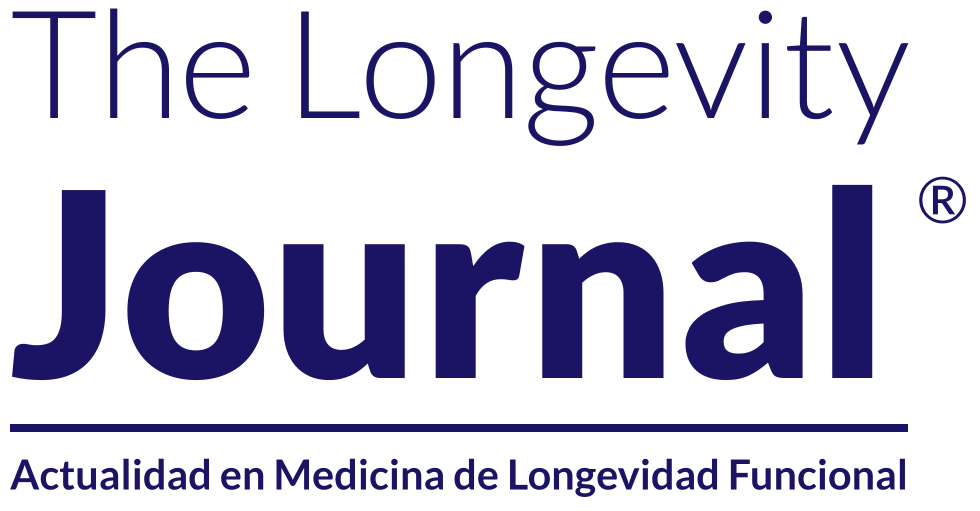

Guía de marca · paleta, logotipos y tipografía · Edición semanal N.º 01
Medida sobre la portada y tomada de la paleta cerrada de LAI. El fondo es un degradado azul → azul eléctrico → periwinkle, a 135°.
Colores de apoyo — para versiones sobre fondo claro, piezas internas y texto.
El oro del escudo de LAI aparece solo dentro del escudo y nunca como color plano.
Vectores SVG con el texto convertido a curvas (no dependen de la fuente instalada) y PNG transparentes de 4000 px de ancho.



Familia única: Lato. Tamaños medidos sobre la portada de 1500 × 2000 px; en otros formatos se escalan en proporción al ancho.
30 px · MAYÚSCULAS · tracking 0.2 em · blanco
«EDICIÓN SEMANAL · N.º 01» y «OCTUBRE 2026», sobre filete lila de 2 px
150 px · tracking 0 · blanco
«The Longevity»
258 px · tracking 0 · blanco · ® en Lato Regular
«Journal», con filete cian de 8 px al ancho del título
41 px · tracking 0 · ancho exacto del filete cian
«Actualidad en Medicina de Longevidad Funcional»
42 px · interlineado 56 px (1.33) · blanco
«Evidencia clínica, nuevos tratamientos, avances…»
30 px · tracking 0.04 em · blanco
«longevityacademicinstitute.com»
Pesos incluidos en la carpeta fuentes: Lato 300, 400, 700 y 900. Para texto largo de cuerpo (artículos, PDF) el sistema LAI usa Arimo Regular.